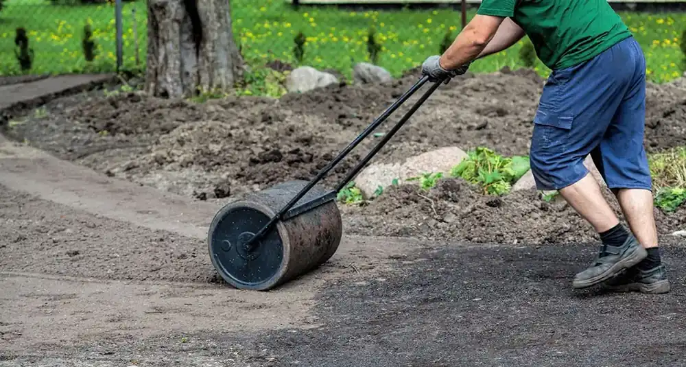
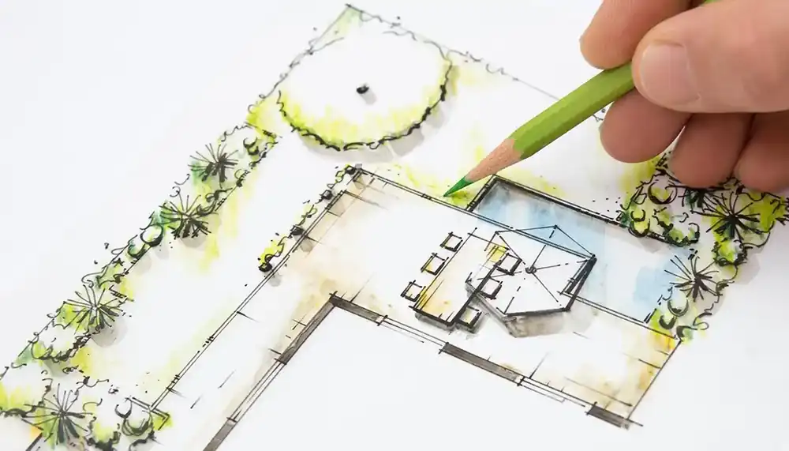
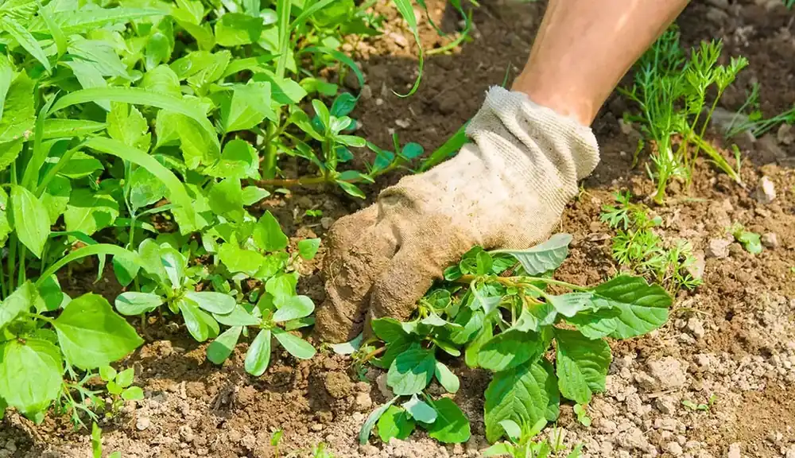
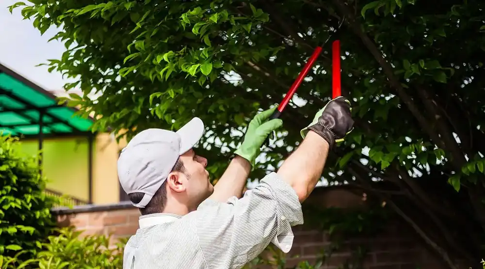
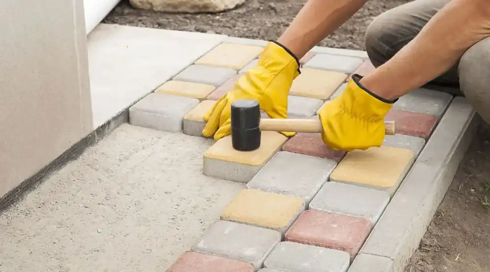
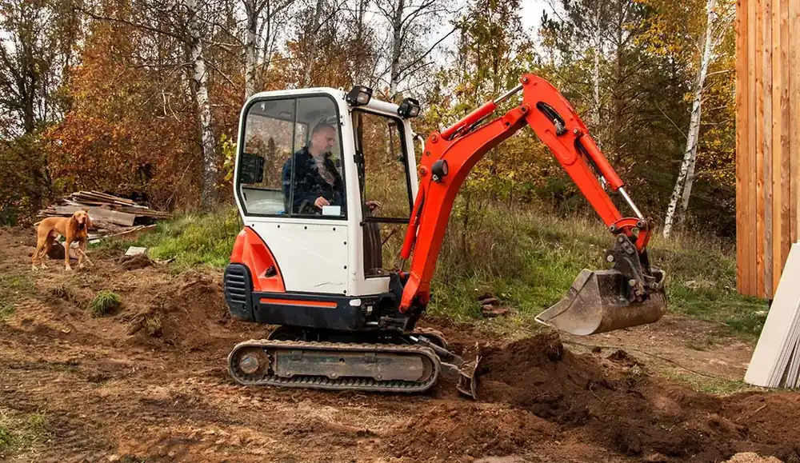
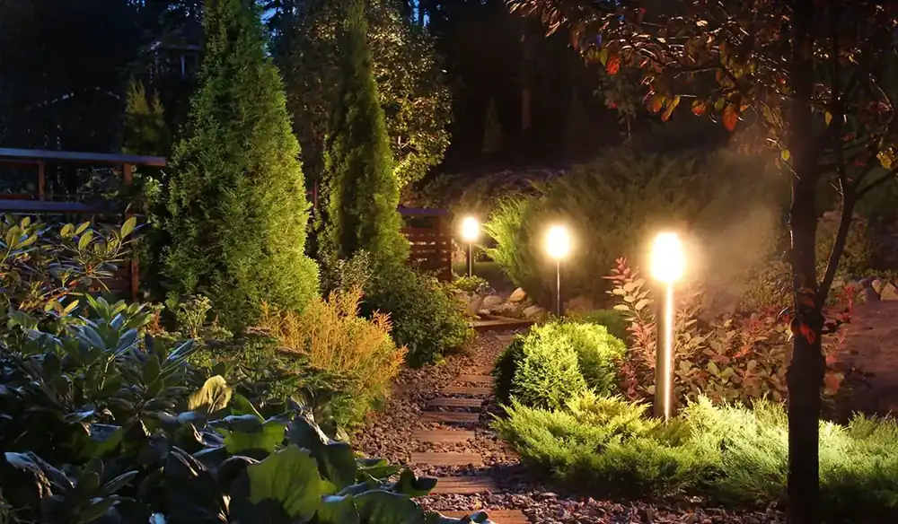
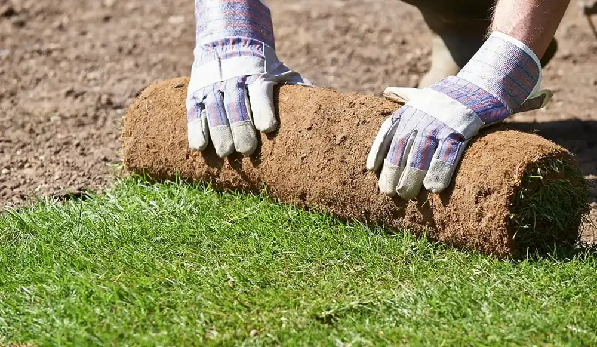

7MDT ALLROUND SERVICE
Van Maarseveenstraat 10 -025042PK Tilburg

Plaats uw klus, ontvang offertes van hoveniersbedrijven uit uw eigen omgeving en vergelijk rustig. Gratis en zonder verplichtingen.
Ontvang en vergelijk voorstellen van meerdere bedrijven.
Al 15.392 mensen hebben hun klus succesvol geplaatst op Hovenier.nl.
Bereik 2.369 hoveniersbedrijven door heel Nederland.

1.999 hoveniers

2.261 hoveniers
2.369 hoveniers

1.531 hoveniers

2.529 hoveniers

2.175 hoveniers

1.381 hoveniers

2.205 hoveniers
Van aanvraag tot offerte, zonder dat u zelf bedrijven hoeft te bellen.
Vertel in een paar stappen wat u wilt laten doen, waar en wanneer. Dat kost ongeveer een minuut.
Aangesloten bedrijven uit uw omgeving zien uw aanvraag en laten weten of ze de klus kunnen doen.
U ontvangt voorstellen van meerdere bedrijven en vergelijkt prijs, aanpak en beoordelingen.
U zit nergens aan vast. Past er geen enkel voorstel, dan laat u de aanvraag gewoon lopen.
Een greep uit de bedrijven die via Hovenier.nl klussen aannemen.


Projecten die door aangesloten hoveniers zijn uitgevoerd.
Gemiddeld 4,9 van de 5 sterren over deze 8 recente beoordelingen.

11-08-2026
Een tuin staat niet los van de woning. Wanneer beide goed op elkaar aansluite...

11-08-2026
Zelf planten opkweken vanuit een zaadje is een leuke manier om meer uit uw tu...

06-08-2026
Een schutting is veel meer dan een erfafscheiding. Het bepaalt voor een groot...

29-07-2026
Douglas hout is al jaren een van de populairste houtsoorten voor toepassingen...